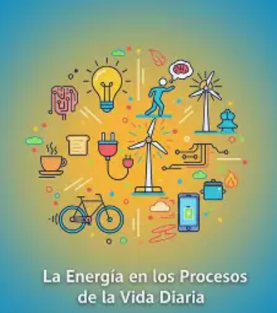

La Materia Y Sus Procesos En La Vida Diaria

Bienvenidos a mi página sobre la materia y sus procesos en la vida diaria.
En las siguientes páginas encontrarás información sencilla sobre qué es la materia, sus características y los diferentes procesos que podemos observar en nuestra vida cotidiana.
También podrás encontrar información explicativa, un audio de un profesor y un video para complementar el aprendizaje y comprender mejor el tema.
Prodras poner a prueba tu conocimietos aprendidos en esta pagina, en un pequeño cuestionaro
INDICE